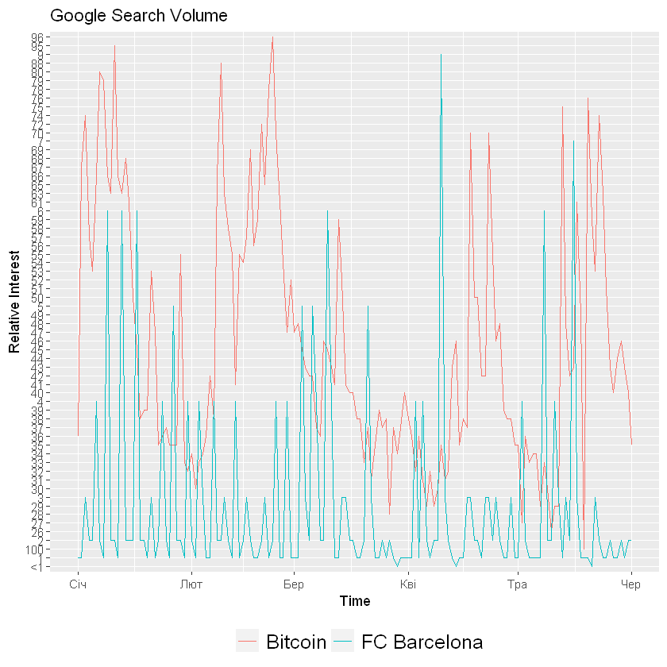

4 Data collection and saving
This chapter contains information about data reading and writing from/to different formats: csv, xml, json, google services, sql, html.
You need this packages for code execution:
There are many data source types for data storing, reading. Let’s review and try some of them.
4.1 CSV (Comma Separated Values)
CSV - comma separated values.
You can use / or \\ for writing correct path in R. For example:
To combine path use paste() or paste0() functions
4.1.1 Sample dataset description
Information about dataset from kaggle.com. Original file located at url: https://www.kaggle.com/radmirzosimov/telecom-users-dataset.
Any business wants to maximize the number of customers. To achieve this goal, it is important not only to try to attract new ones, but also to retain existing ones. Retaining a client will cost the company less than attracting a new one. In addition, a new client may be weakly interested in business services and it will be difficult to work with him, while old clients already have the necessary data on interaction with the service.
Accordingly, predicting the churn, we can react in time and try to keep the client who wants to leave. Based on the data about the services that the client uses, we can make him a special offer, trying to change his decision to leave the operator. This will make the task of retention easier to implement than the task of attracting new users, about which we do not know anything yet.
You are provided with a dataset from a telecommunications company. The data contains information about almost six thousand users, their demographic characteristics, the services they use, the duration of using the operator’s services, the method of payment, and the amount of payment.
The task is to analyze the data and predict the churn of users (to identify people who will and will not renew their contract). The work should include the following mandatory items:
- Description of the data (with the calculation of basic statistics);
- Research of dependencies and formulation of hypotheses;
- Building models for predicting the outflow (with justification for the choice of a particular model) 4. based on tested hypotheses and identified relationships;
- Comparison of the quality of the obtained models.
Fields description:
customerID- customer idgender- client gender (male / female)SeniorCitizen- is the client retired (1, 0)Partner- is the client married (Yes, No)tenure- how many months a person has been a client of the companyPhoneService- is the telephone service connected (Yes, No)MultipleLines- are multiple phone lines connected (Yes, No, No phone service)InternetService- client’s Internet service provider (DSL, Fiber optic, No)OnlineSecurity- is the online security service connected (Yes, No, No internet service)OnlineBackup- is the online backup service activated (Yes, No, No internet service)DeviceProtection- does the client have equipment insurance (Yes, No, No internet service)TechSupport- is the technical support service connected (Yes, No, No internet service)StreamingTV- is the streaming TV service connected (Yes, No, No internet service)StreamingMovies- is the streaming cinema service activated (Yes, No, No internet service)Contract- type of customer contract (Month-to-month, One year, Two year)PaperlessBilling- whether the client uses paperless billing (Yes, No)PaymentMethod- payment method (Electronic check, Mailed check, Bank transfer (automatic), Credit card (automatic))MonthlyCharges- current monthly paymentTotalCharges- the total amount that the client paid for the services for the entire timeChurn - whetherthere was a churn (Yes or No)
Thare are few methods for reading/writing csv in base package:
read.csv(),write.csv- default data separator is,, decimal is separator..read.csv2(),write.csv2- default data separator is;, decimal is separator,.
Before using any new function check it usage information with help(function_name) or ?function_name, example: ?read.csv.
You can read (current data set has NA values as example, there are no NA in original datase):
'data.frame': 5986 obs. of 22 variables:
$ X : int 1869 4528 6344 6739 432 2215 5260 6001 1480 5137 ...
$ customerID : chr "7010-BRBUU" "9688-YGXVR" "9286-DOJGF" "6994-KERXL" ...
$ gender : chr "Male" "Female" "Female" "Male" ...
$ SeniorCitizen : int 0 0 1 0 0 0 0 0 0 1 ...
$ Partner : chr "Yes" "No" "Yes" "No" ...
$ Dependents : chr "Yes" "No" "No" "No" ...
$ tenure : int 72 44 38 4 2 70 33 1 39 55 ...
$ PhoneService : chr "Yes" "Yes" "Yes" "Yes" ...
$ MultipleLines : chr "Yes" "No" "Yes" "No" ...
$ InternetService : chr "No" "Fiber optic" "Fiber optic" "DSL" ...
$ OnlineSecurity : chr "No internet service" "No" "No" "No" ...
$ OnlineBackup : chr "No internet service" "Yes" "No" "No" ...
$ DeviceProtection: chr "No internet service" "Yes" "No" "No" ...
$ TechSupport : chr "No internet service" "No" "No" "No" ...
$ StreamingTV : chr "No internet service" "Yes" "No" "No" ...
$ StreamingMovies : chr "No internet service" "No" "No" "Yes" ...
$ Contract : chr "Two year" "Month-to-month" "Month-to-month" "Month-to-month" ...
$ PaperlessBilling: chr "No" "Yes" "Yes" "Yes" ...
$ PaymentMethod : chr "Credit card (automatic)" "Credit card (automatic)" "Bank transfer (automatic)" "Electronic check" ...
$ MonthlyCharges : chr "24.1" "88.15" "74.95" "55.9" ...
$ TotalCharges : num 1735 3973 2870 238 120 ...
$ Churn : chr "No" "No" "Yes" "No" ...'data.frame': 5986 obs. of 22 variables:
$ X : int 1869 4528 6344 6739 432 2215 5260 6001 1480 5137 ...
$ customerID : chr "7010-BRBUU" "9688-YGXVR" "9286-DOJGF" "6994-KERXL" ...
$ gender : chr "Male" "Female" "Female" "Male" ...
$ SeniorCitizen : int 0 0 1 0 0 0 0 0 0 1 ...
$ Partner : chr "Yes" "No" "Yes" "No" ...
$ Dependents : chr "Yes" "No" "No" "No" ...
$ tenure : int 72 44 38 4 2 70 33 1 39 55 ...
$ PhoneService : chr "Yes" "Yes" "Yes" "Yes" ...
$ MultipleLines : chr "Yes" "No" "Yes" "No" ...
$ InternetService : chr "No" "Fiber optic" "Fiber optic" "DSL" ...
$ OnlineSecurity : chr "No internet service" "No" "No" "No" ...
$ OnlineBackup : chr "No internet service" "Yes" "No" "No" ...
$ DeviceProtection: chr "No internet service" "Yes" "No" "No" ...
$ TechSupport : chr "No internet service" "No" "No" "No" ...
$ StreamingTV : chr "No internet service" "Yes" "No" "No" ...
$ StreamingMovies : chr "No internet service" "No" "No" "Yes" ...
$ Contract : chr "Two year" "Month-to-month" "Month-to-month" "Month-to-month" ...
$ PaperlessBilling: chr "No" "Yes" "Yes" "Yes" ...
$ PaymentMethod : chr "Credit card (automatic)" "Credit card (automatic)" "Bank transfer (automatic)" "Electronic check" ...
$ MonthlyCharges : num 24.1 88.2 75 55.9 53.5 ...
$ TotalCharges : num 1735 3973 2870 238 120 ...
$ Churn : chr "No" "No" "Yes" "No" ...| X | customerID | gender | SeniorCitizen | Partner | Dependents | tenure | PhoneService | MultipleLines | InternetService | ... | DeviceProtection | TechSupport | StreamingTV | StreamingMovies | Contract | PaperlessBilling | PaymentMethod | MonthlyCharges | TotalCharges | Churn | |
|---|---|---|---|---|---|---|---|---|---|---|---|---|---|---|---|---|---|---|---|---|---|
| <int> | <chr> | <chr> | <int> | <chr> | <chr> | <int> | <chr> | <chr> | <chr> | ... | <chr> | <chr> | <chr> | <chr> | <chr> | <chr> | <chr> | <dbl> | <dbl> | <chr> | |
| 1 | 1869 | 7010-BRBUU | Male | 0 | Yes | Yes | 72 | Yes | Yes | No | ... | No internet service | No internet service | No internet service | No internet service | Two year | No | Credit card (automatic) | 24.10 | 1734.65 | No |
| 2 | 4528 | 9688-YGXVR | Female | 0 | No | No | 44 | Yes | No | Fiber optic | ... | Yes | No | Yes | No | Month-to-month | Yes | Credit card (automatic) | 88.15 | 3973.20 | No |
- $X
- FALSE
- $customerID
- FALSE
- $gender
- FALSE
- $SeniorCitizen
- FALSE
- $Partner
- FALSE
- $Dependents
- FALSE
- $tenure
- FALSE
- $PhoneService
- FALSE
- $MultipleLines
- FALSE
- $InternetService
- FALSE
- $OnlineSecurity
- FALSE
- $OnlineBackup
- FALSE
- $DeviceProtection
- FALSE
- $TechSupport
- FALSE
- $StreamingTV
- FALSE
- $StreamingMovies
- FALSE
- $Contract
- FALSE
- $PaperlessBilling
- FALSE
- $PaymentMethod
- FALSE
- $MonthlyCharges
- TRUE
- $TotalCharges
- TRUE
- $Churn
- FALSE
Check MonthlyCharges: TRUE and TotalCharges: TRUE. These columns has NA-values.
Let’s replace them with mean:
You can write data with write.csv(), write.csv2() from base package.
One more useful package is readr. Examples of using:
4.2 MS Excel files (xlsx)
There are many packages to read/write MS Excel files. xlsx one of the most useful.
?read.xlsx - review package functions and params
Let’s read the data telecom_users.xlsx:
data <- read.xlsx("../../data/telecom_users.xlsx", sheetIndex = 1)
# sheetIndex = 1 - select sheet to read, or use sheetName = "sheet1" to read by Name
head(data)| customerID | gender | SeniorCitizen | Partner | Dependents | tenure | PhoneService | MultipleLines | InternetService | OnlineSecurity | ... | DeviceProtection | TechSupport | StreamingTV | StreamingMovies | Contract | PaperlessBilling | PaymentMethod | MonthlyCharges | TotalCharges | Churn | |
|---|---|---|---|---|---|---|---|---|---|---|---|---|---|---|---|---|---|---|---|---|---|
| <chr> | <chr> | <dbl> | <chr> | <chr> | <dbl> | <chr> | <chr> | <chr> | <chr> | ... | <chr> | <chr> | <chr> | <chr> | <chr> | <chr> | <chr> | <dbl> | <dbl> | <chr> | |
| 1 | 7010-BRBUU | Male | 0 | Yes | Yes | 72 | Yes | Yes | No | No internet service | ... | No internet service | No internet service | No internet service | No internet service | Two year | No | Credit card (automatic) | 24.10 | 1734.65 | No |
| 2 | 9688-YGXVR | Female | 0 | No | No | 44 | Yes | No | Fiber optic | No | ... | Yes | No | Yes | No | Month-to-month | Yes | Credit card (automatic) | 88.15 | 3973.20 | No |
| 3 | 9286-DOJGF | Female | 1 | Yes | No | 38 | Yes | Yes | Fiber optic | No | ... | No | No | No | No | Month-to-month | Yes | Bank transfer (automatic) | 74.95 | 2869.85 | Yes |
| 4 | 6994-KERXL | Male | 0 | No | No | 4 | Yes | No | DSL | No | ... | No | No | No | Yes | Month-to-month | Yes | Electronic check | 55.90 | 238.50 | No |
| 5 | 2181-UAESM | Male | 0 | No | No | 2 | Yes | No | DSL | Yes | ... | Yes | No | No | No | Month-to-month | No | Electronic check | 53.45 | 119.50 | No |
| 6 | 4312-GVYNH | Female | 0 | Yes | No | 70 | No | No phone service | DSL | Yes | ... | Yes | Yes | No | Yes | Two year | Yes | Bank transfer (automatic) | 49.85 | 3370.20 | No |
# You can also use startRow, endRow and other params to define how much data read
data <- read.xlsx("../../data/telecom_users.xlsx", sheetIndex = 1, endRow = 100)
head(data)| customerID | gender | SeniorCitizen | Partner | Dependents | tenure | PhoneService | MultipleLines | InternetService | OnlineSecurity | ... | DeviceProtection | TechSupport | StreamingTV | StreamingMovies | Contract | PaperlessBilling | PaymentMethod | MonthlyCharges | TotalCharges | Churn | |
|---|---|---|---|---|---|---|---|---|---|---|---|---|---|---|---|---|---|---|---|---|---|
| <chr> | <chr> | <dbl> | <chr> | <chr> | <dbl> | <chr> | <chr> | <chr> | <chr> | ... | <chr> | <chr> | <chr> | <chr> | <chr> | <chr> | <chr> | <dbl> | <dbl> | <chr> | |
| 1 | 7010-BRBUU | Male | 0 | Yes | Yes | 72 | Yes | Yes | No | No internet service | ... | No internet service | No internet service | No internet service | No internet service | Two year | No | Credit card (automatic) | 24.10 | 1734.65 | No |
| 2 | 9688-YGXVR | Female | 0 | No | No | 44 | Yes | No | Fiber optic | No | ... | Yes | No | Yes | No | Month-to-month | Yes | Credit card (automatic) | 88.15 | 3973.20 | No |
| 3 | 9286-DOJGF | Female | 1 | Yes | No | 38 | Yes | Yes | Fiber optic | No | ... | No | No | No | No | Month-to-month | Yes | Bank transfer (automatic) | 74.95 | 2869.85 | Yes |
| 4 | 6994-KERXL | Male | 0 | No | No | 4 | Yes | No | DSL | No | ... | No | No | No | Yes | Month-to-month | Yes | Electronic check | 55.90 | 238.50 | No |
| 5 | 2181-UAESM | Male | 0 | No | No | 2 | Yes | No | DSL | Yes | ... | Yes | No | No | No | Month-to-month | No | Electronic check | 53.45 | 119.50 | No |
| 6 | 4312-GVYNH | Female | 0 | Yes | No | 70 | No | No phone service | DSL | Yes | ... | Yes | Yes | No | Yes | Two year | Yes | Bank transfer (automatic) | 49.85 | 3370.20 | No |
Let’s replace Churn values Yes/No by 1/0:
Write final data to excel:
4.2.1 Task 1
Download from kaggle.com and read dataset Default_Fin.csv: https://www.kaggle.com/kmldas/loan-default-prediction
Description:
This is a synthetic dataset created using actual data from a financial institution. The data has been modified to remove identifiable features and the numbers transformed to ensure they do not link to original source (financial institution).
This is intended to be used for academic purposes for beginners who want to practice financial analytics from a simple financial dataset
Index- This is the serial number or unique identifier of the loan takerEmployed- This is a Boolean 1= employed 0= unemployedBank.Balance- Bank Balance of the loan takerAnnual.Salary- Annual salary of the loan taker
Defaulted- This is a Boolean 1= defaulted 0= not defaulted
- Check what columns has missing values
- Count default and non-default clients / and parts of total clients in %
- Count Employed clients
- Count Employed Default clients
- Average salary by Employed clients
- Rename columns to “id”, “empl”, “balance”, “salary”, “default”
Solution for Task 1
| Index | Employed | Bank.Balance | Annual.Salary | Defaulted. | |
|---|---|---|---|---|---|
| <int> | <int> | <dbl> | <dbl> | <int> | |
| 1 | 1 | 1 | 8754.36 | 532339.56 | 0 |
| 2 | 2 | 0 | 9806.16 | 145273.56 | 0 |
| 3 | 3 | 1 | 12882.60 | 381205.68 | 0 |
| 4 | 4 | 1 | 6351.00 | 428453.88 | 0 |
| 5 | 5 | 1 | 9427.92 | 461562.00 | 0 |
| 6 | 6 | 0 | 11035.08 | 89898.72 | 0 |
- Check what columns has missing values
- Count default and non-default clients / and parts of total clients in %
def_count <- nrow(data[data$Defaulted. == 1, ])
no_def_count <- nrow(data[data$Defaulted. == 0, ])
def_count
no_def_count
- Count Employed clients
- Count Employed Default clients
- Average salary by Employed clients
- Rename columns to “id”, “empl”, “balance”, “salary”, “default”:
| id | empl | balance | salary | default | |
|---|---|---|---|---|---|
| <int> | <int> | <dbl> | <dbl> | <int> | |
| 1 | 1 | 1 | 8754.36 | 532339.56 | 0 |
| 2 | 2 | 0 | 9806.16 | 145273.56 | 0 |
| 3 | 3 | 1 | 12882.60 | 381205.68 | 0 |
| 4 | 4 | 1 | 6351.00 | 428453.88 | 0 |
| 5 | 5 | 1 | 9427.92 | 461562.00 | 0 |
| 6 | 6 | 0 | 11035.08 | 89898.72 | 0 |
4.3 XML (eXtensible Markup Language)
For our example we will use data from data/employes.xml. File contains records with info:
<RECORDS>
<EMPLOYEE>
<ID>1</ID>
<NAME>Rick</NAME>
<SALARY>623.3</SALARY>
<STARTDATE>1/1/2012</STARTDATE>
<DEPT>IT</DEPT>
</EMPLOYEE>
...
</RECORDS><?xml version="1.0"?>
<RECORDS>
<EMPLOYEE>
<ID>1</ID>
<NAME>Rick</NAME>
<SALARY>623.3</SALARY>
<STARTDATE>1/1/2012</STARTDATE>
<DEPT>IT</DEPT>
</EMPLOYEE>
<EMPLOYEE>
<ID>2</ID>
<NAME>Dan</NAME>
<SALARY>515.2</SALARY>
<STARTDATE>9/23/2013</STARTDATE>
<DEPT>Operations</DEPT>
</EMPLOYEE>
<EMPLOYEE>
<ID>3</ID>
<NAME>Michelle</NAME>
<SALARY>611</SALARY>
<STARTDATE>11/15/2014</STARTDATE>
<DEPT>IT</DEPT>
</EMPLOYEE>
<EMPLOYEE>
<ID>4</ID>
<NAME>Ryan</NAME>
<SALARY>729</SALARY>
<STARTDATE>5/11/2014</STARTDATE>
<DEPT>HR</DEPT>
</EMPLOYEE>
<EMPLOYEE>
<ID>5</ID>
<NAME>Gary</NAME>
<SALARY>843.25</SALARY>
<STARTDATE>3/27/2015</STARTDATE>
<DEPT>Finance</DEPT>
</EMPLOYEE>
<EMPLOYEE>
<ID>6</ID>
<NAME>Nina</NAME>
<SALARY>578</SALARY>
<STARTDATE>5/21/2013</STARTDATE>
<DEPT>IT</DEPT>
</EMPLOYEE>
<EMPLOYEE>
<ID>7</ID>
<NAME>Simon</NAME>
<SALARY>632.8</SALARY>
<STARTDATE>7/30/2013</STARTDATE>
<DEPT>Operations</DEPT>
</EMPLOYEE>
<EMPLOYEE>
<ID>8</ID>
<NAME>Guru</NAME>
<SALARY>722.5</SALARY>
<STARTDATE>6/17/2014</STARTDATE>
<DEPT>Finance</DEPT>
</EMPLOYEE>
</RECORDS>
<EMPLOYEE>
<ID>1</ID>
<NAME>Rick</NAME>
<SALARY>623.3</SALARY>
<STARTDATE>1/1/2012</STARTDATE>
<DEPT>IT</DEPT>
</EMPLOYEE> For us the best way is to get dataframe:
| ID | NAME | SALARY | STARTDATE | DEPT |
|---|---|---|---|---|
| <chr> | <chr> | <chr> | <chr> | <chr> |
| 1 | Rick | 623.3 | 1/1/2012 | IT |
| 2 | Dan | 515.2 | 9/23/2013 | Operations |
| 3 | Michelle | 611 | 11/15/2014 | IT |
| 4 | Ryan | 729 | 5/11/2014 | HR |
| 5 | Gary | 843.25 | 3/27/2015 | Finance |
| 6 | Nina | 578 | 5/21/2013 | IT |
| 7 | Simon | 632.8 | 7/30/2013 | Operations |
| 8 | Guru | 722.5 | 6/17/2014 | Finance |
4.4 API and JSON
JSON (JavaScript Object Notation) is a lightweight data-interchange format. It is easy for humans to read and write. It is easy for machines to parse and generate. It is based on a subset of the JavaScript Programming Language Standard.
API is the acronym for Application Programming Interface, which is a software intermediary that allows two applications to talk to each other.
One of the most popular packages for json is jsonlite.
Let’s use readinginformation about BTC and USDT crypro currencies from Binance
market = 'BTCUSDT'
interval = '1h'
limit = 100
url <- paste0(url = "https://api.binance.com/api/v3/klines?symbol=", market ,"&interval=", interval,"&limit=", limit)
print(url) # complete request URL[1] "https://api.binance.com/api/v3/klines?symbol=BTCUSDT&interval=1h&limit=100"On the next stage you need use fromJSON() function to get data.
More details about requests to Binanace at https://github.com/binance/binance-spot-api-docs/blob/master/rest-api.md#klinecandlestick-data
If you enter ‘url’ value at browser response is going to be like this:
[
[
1499040000000, // Open time
"0.01634790", // Open
"0.80000000", // High
"0.01575800", // Low
"0.01577100", // Close
"148976.11427815", // Volume
1499644799999, // Close time
"2434.19055334", // Quote asset volume
308, // Number of trades
"1756.87402397", // Taker buy base asset volume
"28.46694368", // Taker buy quote asset volume
"17928899.62484339" // Ignore.
]
]data <- fromJSON(url) # get json and transform it to list()
data <- data[, 1:7] # let's left only 1:7 columns (from Open time to Close time)
head(data)| 1650513600000 | 41693.58000000 | 41750.00000000 | 41525.00000000 | 41610.01000000 | 1138.64337000 | 1650517199999 |
| 1650517200000 | 41610.01000000 | 41699.00000000 | 41434.44000000 | 41462.76000000 | 1229.25936000 | 1650520799999 |
| 1650520800000 | 41462.75000000 | 41600.00000000 | 41419.20000000 | 41522.38000000 | 1049.71244000 | 1650524399999 |
| 1650524400000 | 41522.38000000 | 41940.00000000 | 41451.00000000 | 41855.69000000 | 1928.48091000 | 1650527999999 |
| 1.650528e+12 | 41855.69000000 | 42050.30000000 | 41741.10000000 | 41922.97000000 | 2518.04090000 | 1650531599999 |
| 1650531600000 | 41922.96000000 | 41971.90000000 | 41743.96000000 | 41803.70000000 | 1655.76993000 | 1650535199999 |
| V1 | V2 | V3 | V4 | V5 | V6 | V7 | |
|---|---|---|---|---|---|---|---|
| <chr> | <chr> | <chr> | <chr> | <chr> | <chr> | <chr> | |
| 1 | 1650513600000 | 41693.58000000 | 41750.00000000 | 41525.00000000 | 41610.01000000 | 1138.64337000 | 1650517199999 |
| 2 | 1650517200000 | 41610.01000000 | 41699.00000000 | 41434.44000000 | 41462.76000000 | 1229.25936000 | 1650520799999 |
| 3 | 1650520800000 | 41462.75000000 | 41600.00000000 | 41419.20000000 | 41522.38000000 | 1049.71244000 | 1650524399999 |
| 4 | 1650524400000 | 41522.38000000 | 41940.00000000 | 41451.00000000 | 41855.69000000 | 1928.48091000 | 1650527999999 |
| 5 | 1.650528e+12 | 41855.69000000 | 42050.30000000 | 41741.10000000 | 41922.97000000 | 2518.04090000 | 1650531599999 |
| 6 | 1650531600000 | 41922.96000000 | 41971.90000000 | 41743.96000000 | 41803.70000000 | 1655.76993000 | 1650535199999 |
# fix columns names
colnames(data) <- c("Open_time", "Open", "High", "Low", "Close", "Volume", "Close_time")
head(data) # looks better, but columns are characters still| Open_time | Open | High | Low | Close | Volume | Close_time | |
|---|---|---|---|---|---|---|---|
| <chr> | <chr> | <chr> | <chr> | <chr> | <chr> | <chr> | |
| 1 | 1650513600000 | 41693.58000000 | 41750.00000000 | 41525.00000000 | 41610.01000000 | 1138.64337000 | 1650517199999 |
| 2 | 1650517200000 | 41610.01000000 | 41699.00000000 | 41434.44000000 | 41462.76000000 | 1229.25936000 | 1650520799999 |
| 3 | 1650520800000 | 41462.75000000 | 41600.00000000 | 41419.20000000 | 41522.38000000 | 1049.71244000 | 1650524399999 |
| 4 | 1650524400000 | 41522.38000000 | 41940.00000000 | 41451.00000000 | 41855.69000000 | 1928.48091000 | 1650527999999 |
| 5 | 1.650528e+12 | 41855.69000000 | 42050.30000000 | 41741.10000000 | 41922.97000000 | 2518.04090000 | 1650531599999 |
| 6 | 1650531600000 | 41922.96000000 | 41971.90000000 | 41743.96000000 | 41803.70000000 | 1655.76993000 | 1650535199999 |
is.numeric(data[,1]) # check 1st column type is numeric
is.numeric(data[,2]) # check 2nd column type is numericdata <- as.data.frame(sapply(data, as.numeric)) # convert all columns to numeric
head(data) # good, its double now| Open_time | Open | High | Low | Close | Volume | Close_time | |
|---|---|---|---|---|---|---|---|
| <dbl> | <dbl> | <dbl> | <dbl> | <dbl> | <dbl> | <dbl> | |
| 1 | 1.650514e+12 | 41693.58 | 41750.0 | 41525.00 | 41610.01 | 1138.643 | 1.650517e+12 |
| 2 | 1.650517e+12 | 41610.01 | 41699.0 | 41434.44 | 41462.76 | 1229.259 | 1.650521e+12 |
| 3 | 1.650521e+12 | 41462.75 | 41600.0 | 41419.20 | 41522.38 | 1049.712 | 1.650524e+12 |
| 4 | 1.650524e+12 | 41522.38 | 41940.0 | 41451.00 | 41855.69 | 1928.481 | 1.650528e+12 |
| 5 | 1.650528e+12 | 41855.69 | 42050.3 | 41741.10 | 41922.97 | 2518.041 | 1.650532e+12 |
| 6 | 1.650532e+12 | 41922.96 | 41971.9 | 41743.96 | 41803.70 | 1655.770 | 1.650535e+12 |
Final stage is to convert Open_time and Close_time to dates.
data$Open_time <- as.POSIXct(data$Open_time/1e3, origin = '1970-01-01')
data$Close_time <- as.POSIXct(data$Close_time/1e3, origin = '1970-01-01')
head(data) | Open_time | Open | High | Low | Close | Volume | Close_time | |
|---|---|---|---|---|---|---|---|
| <dttm> | <dbl> | <dbl> | <dbl> | <dbl> | <dbl> | <dttm> | |
| 1 | 2022-04-21 07:00:00 | 41693.58 | 41750.0 | 41525.00 | 41610.01 | 1138.643 | 2022-04-21 07:59:59 |
| 2 | 2022-04-21 08:00:00 | 41610.01 | 41699.0 | 41434.44 | 41462.76 | 1229.259 | 2022-04-21 08:59:59 |
| 3 | 2022-04-21 09:00:00 | 41462.75 | 41600.0 | 41419.20 | 41522.38 | 1049.712 | 2022-04-21 09:59:59 |
| 4 | 2022-04-21 10:00:00 | 41522.38 | 41940.0 | 41451.00 | 41855.69 | 1928.481 | 2022-04-21 10:59:59 |
| 5 | 2022-04-21 11:00:00 | 41855.69 | 42050.3 | 41741.10 | 41922.97 | 2518.041 | 2022-04-21 11:59:59 |
| 6 | 2022-04-21 12:00:00 | 41922.96 | 41971.9 | 41743.96 | 41803.70 | 1655.770 | 2022-04-21 12:59:59 |
| Open_time | Open | High | Low | Close | Volume | Close_time | |
|---|---|---|---|---|---|---|---|
| <dttm> | <dbl> | <dbl> | <dbl> | <dbl> | <dbl> | <dttm> | |
| 95 | 2022-04-25 05:00:00 | 39095.81 | 39153.94 | 38961.64 | 39091.17 | 1205.5158 | 2022-04-25 05:59:59 |
| 96 | 2022-04-25 06:00:00 | 39091.17 | 39294.76 | 39086.37 | 39253.71 | 1443.3318 | 2022-04-25 06:59:59 |
| 97 | 2022-04-25 07:00:00 | 39253.70 | 39256.28 | 39055.71 | 39139.74 | 896.8554 | 2022-04-25 07:59:59 |
| 98 | 2022-04-25 08:00:00 | 39139.74 | 39230.50 | 38947.42 | 38975.22 | 1057.4900 | 2022-04-25 08:59:59 |
| 99 | 2022-04-25 09:00:00 | 38975.21 | 39057.97 | 38590.00 | 38636.35 | 2814.9716 | 2022-04-25 09:59:59 |
| 100 | 2022-04-25 10:00:00 | 38636.35 | 38675.68 | 38200.00 | 38534.99 | 3528.2355 | 2022-04-25 10:59:59 |
4.5 Google Services
4.5.1 Google Spreadsheets
THIS CHAPTER IS UNDER CONSTRUCTION / Working with Google Spreadsheets need account authorization.
googlesheets4 is a package to work with Google Sheets from R.
You can read google documents after authentification on google service. There is sample code:
read_sheet("https://docs.google.com/spreadsheets/d/1U6Cf_qEOhiR9AZqTqS3mbMF3zt2db48ZP5v3rkrAEJY/edit#gid=780868077")
gs4_deauth()Let’s read sample dataset gapminder. It detailed described in next paragraph.
4.5.2 Google Search Trends
Google Trends is a service for analyzing search requests by many filters like region (continent, country, locality), period (year, month), information category (business, education, hobby, healthcare), information type (news, shopping, video, images) https://trends.google.com/trends/
Let’s configure out google trends query params
| date | hits | keyword | geo | time | gprop | category | |
|---|---|---|---|---|---|---|---|
| <dttm> | <chr> | <chr> | <chr> | <chr> | <chr> | <int> | |
| 1 | 2021-01-01 | 36 | Bitcoin | AT | 2021-01-01 2021-06-01 | web | 0 |
| 2 | 2021-01-02 | 67 | Bitcoin | AT | 2021-01-01 2021-06-01 | web | 0 |
| 3 | 2021-01-03 | 74 | Bitcoin | AT | 2021-01-01 2021-06-01 | web | 0 |
| 4 | 2021-01-04 | 57 | Bitcoin | AT | 2021-01-01 2021-06-01 | web | 0 |
| 5 | 2021-01-05 | 53 | Bitcoin | AT | 2021-01-01 2021-06-01 | web | 0 |
| 6 | 2021-01-06 | 66 | Bitcoin | AT | 2021-01-01 2021-06-01 | web | 0 |
plot <- ggplot(data=time_trend, aes(x=date, y=hits, group=keyword, col=keyword)) +
geom_line() +
xlab('Time') +
ylab('Relative Interest') +
theme(legend.title = element_blank(), legend.position="bottom", legend.text=element_text(size=15)) +
ggtitle("Google Search Volume")
plot
4.6 SQL (with SQLite sample)
We are going to review working with database on SQLite, becouse it allows us not to install DB-server and start working with simple file.
For now we will use RSQLite package.
| mpg | cyl | disp | hp | drat | wt | qsec | vs | am | gear | carb | |
|---|---|---|---|---|---|---|---|---|---|---|---|
| <dbl> | <dbl> | <dbl> | <dbl> | <dbl> | <dbl> | <dbl> | <dbl> | <dbl> | <dbl> | <dbl> | |
| Mazda RX4 | 21.0 | 6 | 160 | 110 | 3.90 | 2.620 | 16.46 | 0 | 1 | 4 | 4 |
| Mazda RX4 Wag | 21.0 | 6 | 160 | 110 | 3.90 | 2.875 | 17.02 | 0 | 1 | 4 | 4 |
| Datsun 710 | 22.8 | 4 | 108 | 93 | 3.85 | 2.320 | 18.61 | 1 | 1 | 4 | 1 |
| Hornet 4 Drive | 21.4 | 6 | 258 | 110 | 3.08 | 3.215 | 19.44 | 1 | 0 | 3 | 1 |
| Hornet Sportabout | 18.7 | 8 | 360 | 175 | 3.15 | 3.440 | 17.02 | 0 | 0 | 3 | 2 |
| Valiant | 18.1 | 6 | 225 | 105 | 2.76 | 3.460 | 20.22 | 1 | 0 | 3 | 1 |
I need this code for book successful building (remove database file if exists):
#Define the file name that will be deleted
fn <- paste0("../../data/cars.sqlite")
#Check its existence
if (file.exists(fn)) {
#Delete file if it exists
file.remove(fn)
}Now, let’s create new:
# Write the mtcars dataset into a table names mtcars_data
dbWriteTable(conn, "cars_table", mtcars)
# List all the tables available in the database
dbListTables(conn)| mpg | cyl | disp | hp | drat | wt | qsec | vs | am | gear | carb | |
|---|---|---|---|---|---|---|---|---|---|---|---|
| <dbl> | <dbl> | <dbl> | <dbl> | <dbl> | <dbl> | <dbl> | <dbl> | <dbl> | <dbl> | <dbl> | |
| 1 | 21.0 | 6 | 160 | 110 | 3.90 | 2.620 | 16.46 | 0 | 1 | 4 | 4 |
| 2 | 21.0 | 6 | 160 | 110 | 3.90 | 2.875 | 17.02 | 0 | 1 | 4 | 4 |
| 3 | 22.8 | 4 | 108 | 93 | 3.85 | 2.320 | 18.61 | 1 | 1 | 4 | 1 |
| 4 | 21.4 | 6 | 258 | 110 | 3.08 | 3.215 | 19.44 | 1 | 0 | 3 | 1 |
| 5 | 18.7 | 8 | 360 | 175 | 3.15 | 3.440 | 17.02 | 0 | 0 | 3 | 2 |
| 6 | 18.1 | 6 | 225 | 105 | 2.76 | 3.460 | 20.22 | 1 | 0 | 3 | 1 |
You can write complex queries for many tables if you knowledge of SQL allows.
4.7 Web-pages (HTML)
Sometimes decision making needs scrap data from web sources and pages.
Let’s try to parse data from Wikipedia as table.
Go to web page https://en.wikipedia.org/wiki/List_of_largest_banks and check it.
{html_document}
<html class="client-nojs" lang="en" dir="ltr">
[1] <head>\n<meta http-equiv="Content-Type" content="text/html; charset=UTF-8 ...
[2] <body class="mediawiki ltr sitedir-ltr mw-hide-empty-elt ns-0 ns-subject ...{xml_nodeset (4)}
[1] <table class="box-Missing_information plainlinks metadata ambox ambox-con ...
[2] <table class="wikitable sortable mw-collapsible"><tbody>\n<tr>\n<th data- ...
[3] <table class="wikitable sortable mw-collapsible">\n<caption>Number of ban ...
[4] <table class="wikitable sortable mw-collapsible"><tbody>\n<tr>\n<th data- ...For now, let’s read a table of Total Assets in US Billion
# with pipe operator
#tables[2] %>%
# html_table(fill = TRUE) %>%
# as.data.frame()
#without pipe operator
assets_table <- as.data.frame(html_table(tables[2], fill = TRUE))
head(assets_table)| Rank | Bank.name | Total.assets.2020..US..billion. | |
|---|---|---|---|
| <int> | <chr> | <chr> | |
| 1 | 1 | Industrial and Commercial Bank of China | 5,518.00 |
| 2 | 2 | China Construction Bank | 4,400.00 |
| 3 | 3 | Agricultural Bank of China | 4,300.00 |
| 4 | 4 | Bank of China | 4,200.00 |
| 5 | 5 | JPMorgan Chase | 3,831.65 |
| 6 | 6 | Mitsubishi UFJ Financial Group | 3,175.21 |
Next is reading data of market capitalization table (4th):
| Rank | Bank.name | Market.cap.US..billion. | |
|---|---|---|---|
| <int> | <chr> | <dbl> | |
| 1 | 1 | JPMorgan Chase | 368.78 |
| 2 | 2 | Industrial and Commercial Bank of China | 295.65 |
| 3 | 3 | Bank of America | 279.73 |
| 4 | 4 | Wells Fargo | 214.34 |
| 5 | 5 | China Construction Bank | 207.98 |
| 6 | 6 | Agricultural Bank of China | 181.49 |
And now let’s merge() this two datasets:
| Bank.name | Rank.x | Total.assets.2020..US..billion. | Rank.y | Market.cap.US..billion. | |
|---|---|---|---|---|---|
| <chr> | <int> | <chr> | <int> | <dbl> | |
| 1 | Agricultural Bank of China | 3 | 4,300.00 | 6 | 181.49 |
| 2 | Australia and New Zealand Banking Group | 48 | 661.72 | 26 | 54.88 |
| 3 | Banco Bilbao Vizcaya Argentaria | 42 | 782.16 | 37 | 37.42 |
| 4 | Banco Bradesco | 79 | 345.21 | 18 | 74.67 |
| 5 | Banco Santander | 16 | 1,702.61 | 17 | 75.47 |
| 6 | Bank of America | 8 | 2,434.08 | 3 | 279.73 |
4.7.1 Task 3
From a page https://en.wikipedia.org/wiki/List_of_largest_banks read and merge by country named tables:
- Number of banks in the top 100 by total assets
- Total market capital (US$ billion) across the top 70 banks by country
Solution
library(rvest)
url <- "https://en.wikipedia.org/wiki/List_of_largest_banks" # got to url in other tab
#url <- "data/List of largest banks - Wikipedia_.html"
page_data <- read_html(url) # read html content
tables <- html_nodes(page_data, "table")
html_table(tables[1]) #its not needed tableA tibble: 1 X1 X2 <lgl> <chr> NA This article is missing information about Revenue and Employment. Please expand the article to include this information. Further details may exist on the talk page. (September 2020)
html_table(tables[3]) # thats solution for "Number of banks in the top 100 by total assets"
#check the end of table. There are NA record
# lets remove itA tibble: 26 Rank Country Number <int> <chr> <int> 1 China 19 2 United States 11 3 Japan 8 4 United Kingdom 6 4 France 6 4 South Korea 6 5 Canada 5 5 Germany 5 6 Australia 4 6 Brazil 4 6 Spain 4 7 Netherlands 3 7 Singapore 3 7 Sweden 3 7 Switzerland 3 8 Italy 2 9 India 1 9 Austria 1 9 Belgium 1 9 Denmark 1 9 Finland 1 9 Norway 1 9 Russia 1 9 Qatar 1 9 NA NA 9 NA NA
table1 <- as.data.frame(html_table(tables[3]))
table1 <- table1[!is.na(table1$Country), ]
table1 # now it OK!| Rank | Country | Number | |
|---|---|---|---|
| <int> | <chr> | <int> | |
| 1 | 1 | China | 19 |
| 2 | 2 | United States | 11 |
| 3 | 3 | Japan | 8 |
| 4 | 4 | United Kingdom | 6 |
| 5 | 4 | France | 6 |
| 6 | 4 | South Korea | 6 |
| 7 | 5 | Canada | 5 |
| 8 | 5 | Germany | 5 |
| 9 | 6 | Australia | 4 |
| 10 | 6 | Brazil | 4 |
| 11 | 6 | Spain | 4 |
| 12 | 7 | Netherlands | 3 |
| 13 | 7 | Singapore | 3 |
| 14 | 7 | Sweden | 3 |
| 15 | 7 | Switzerland | 3 |
| 16 | 8 | Italy | 2 |
| 17 | 9 | India | 1 |
| 18 | 9 | Austria | 1 |
| 19 | 9 | Belgium | 1 |
| 20 | 9 | Denmark | 1 |
| 21 | 9 | Finland | 1 |
| 22 | 9 | Norway | 1 |
| 23 | 9 | Russia | 1 |
| 24 | 9 | Qatar | 1 |
# SOlution for "Total market capital (US$ billion) across the top 70 banks by country"
# compare this with table on a given page
table2 <- as.data.frame(html_table(tables[4]))
table2 # now it OK!| Rank | Bank.name | Market.cap.US..billion. |
|---|---|---|
| <int> | <chr> | <dbl> |
| 1 | JPMorgan Chase | 368.78 |
| 2 | Industrial and Commercial Bank of China | 295.65 |
| 3 | Bank of America | 279.73 |
| 4 | Wells Fargo | 214.34 |
| 5 | China Construction Bank | 207.98 |
| 6 | Agricultural Bank of China | 181.49 |
| 7 | HSBC Holdings PLC | 169.47 |
| 8 | Citigroup Inc. | 163.58 |
| 9 | Bank of China | 151.15 |
| 10 | China Merchants Bank | 133.37 |
| 11 | Royal Bank of Canada | 113.80 |
| 12 | Toronto-Dominion Bank | 106.61 |
| 13 | Commonwealth Bank | 99.77 |
| 14 | HDFC Bank | 105.90 |
| 15 | U.S. Bancorp | 84.40 |
| 16 | Goldman Sachs | 78.70 |
| 17 | Banco Santander | 75.47 |
| 18 | Banco Bradesco | 74.67 |
| 19 | Morgan Stanley | 73.93 |
| 20 | Westpac | 67.84 |
| 21 | Mitsubishi UFJ Financial Group | 66.20 |
| 22 | Scotiabank | 65.48 |
| 23 | PNC Financial Services | 63.11 |
| 24 | Bank of Communications | 61.85 |
| 25 | BNP Paribas | 59.36 |
| 26 | Australia and New Zealand Banking Group | 54.88 |
| 27 | National Australia Bank | 51.68 |
| 28 | Lloyds Banking Group | 51.19 |
| 29 | Sumitomo Mitsui Financial Group | 49.85 |
| 30 | Bank of Montreal | 48.12 |
| 31 | UBS | 45.92 |
| 32 | ING Group | 44.97 |
| 33 | Capital One | 43.22 |
| 34 | The Bank of New York Mellon | 42.58 |
| 35 | China Minsheng Bank | 39.13 |
| 36 | China CITIC Bank | 38.55 |
| 37 | Banco Bilbao Vizcaya Argentaria | 37.42 |
| 38 | Mizuho Financial Group | 36.95 |
| 39 | Intesa Sanpaolo | 36.90 |
| 40 | Credit Agricole | 34.89 |
| 41 | Canadian Imperial Bank of Commerce | 34.87 |
| 42 | Royal Bank of Scotland | 33.95 |
| 43 | Barclays | 33.26 |
| 44 | Credit Suisse | 30.75 |
| 45 | Nordea | 29.59 |
| 46 | Standard Chartered | 29.37 |
| 47 | KBC Bank | 27.40 |
| 48 | UniCredit | 26.88 |
| 49 | Societe Generale | 21.27 |
| 50 | Deutsche Bank | 15.77 |
4.8 Набори даних
- https://github.com/kleban/r-book-published/tree/main/datasets/telecom_users.csv
- https://github.com/kleban/r-book-published/tree/main/datasets/telecom_sers.xlsx
- https://github.com/kleban/r-book-published/tree/main/datasets/Default_Fin.csv
- https://github.com/kleban/r-book-published/tree/main/datasets/employes.xml